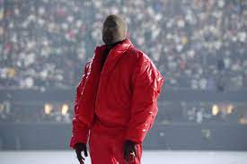

My Beautiful Dark Twisted Fantasy
 Kanye's 5th studio album My Beautiful Dark Twisted Fantasy was a critically acclaimed masterpiece.
It was masterfully orchestrated and produced. Kanye brought together the biggest names in the
rap industry and came out with numerous hits that impacted the whole industry. This album is listed
as the third best album of all time in the Rolling Stones list.
Kanye's 5th studio album My Beautiful Dark Twisted Fantasy was a critically acclaimed masterpiece.
It was masterfully orchestrated and produced. Kanye brought together the biggest names in the
rap industry and came out with numerous hits that impacted the whole industry. This album is listed
as the third best album of all time in the Rolling Stones list.
The Life of Pablo
 This is Kanye's 2016 album. The album is a personal statement about Kanye being torn between god and
family, or the party life. Tracks like Waves and Father Stretch My Hands were perfect summer sounds, with
No More Parties in LA and Saint Pablo having memorable lyrics and flow. Kanye did a worldwide tour upon
release of the album, although it got cancelled midway through due to Kanye's declining mental condition.
The Life of the Pablo album title comes from three different "Pablos". Pablo Escabor, Pablo Picasso and
Saint Paulo. Each representing drugs, art, and religion.
This is Kanye's 2016 album. The album is a personal statement about Kanye being torn between god and
family, or the party life. Tracks like Waves and Father Stretch My Hands were perfect summer sounds, with
No More Parties in LA and Saint Pablo having memorable lyrics and flow. Kanye did a worldwide tour upon
release of the album, although it got cancelled midway through due to Kanye's declining mental condition.
The Life of the Pablo album title comes from three different "Pablos". Pablo Escabor, Pablo Picasso and
Saint Paulo. Each representing drugs, art, and religion.
Donda

Donda is Kanye's 10th studio album released in 2021. The album is a dedication to Kanye's mother whome
Kanye had admiration for greatly. The album was a mixture of gospel, rap, and experimental. Kanye held three
listening parties to get realtime feedback from the audience to shape his album. The album turned out great
with sounds never heard of before and Kanye once again pushing the boundries. Shortly after the release of the
album Kanye held a joint concert with Drake finally squashing their long-lasting beef. The concert was a huge
success.